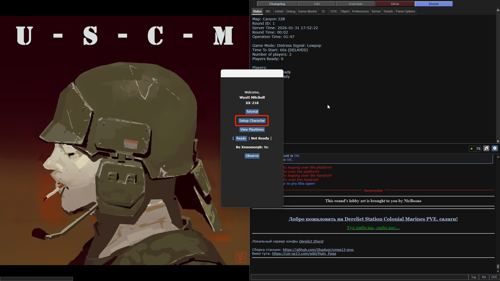
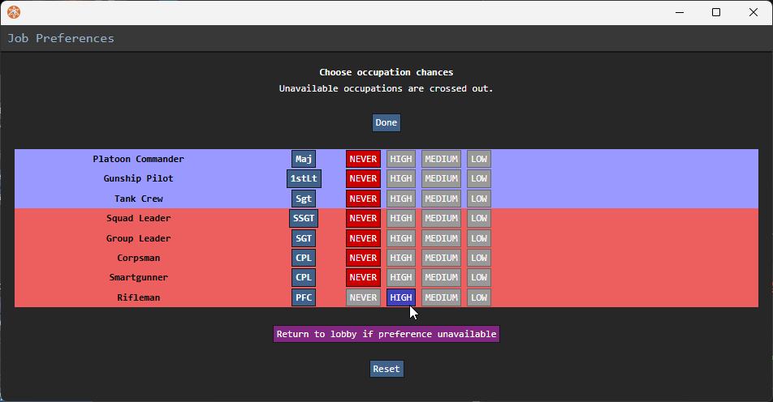
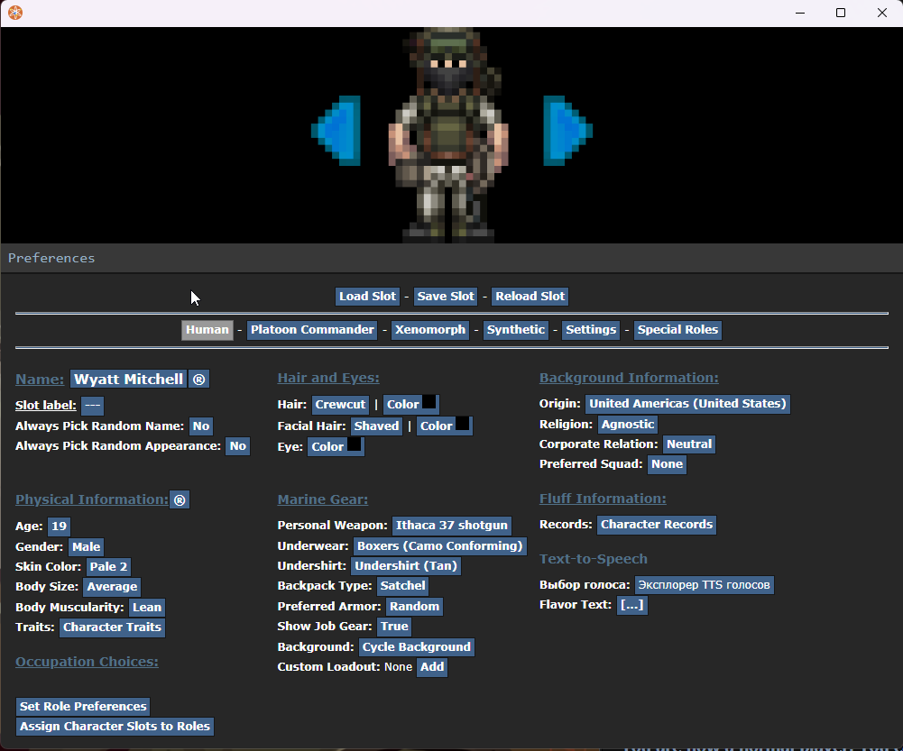

Создание персонажа и выбор роли
После того как вы зашли на сервер (подробнее в разделе Как зайти на сервер), перед вами откроется главное меню. Здесь начинается ваш путь в рядах ККМП.
Первое появление
Если вы зашли впервые, вам нужно создать своего бойца. Нажмите кнопку Setup Character в главном меню.

Выбор специализации (Roles)
Первым делом выберем вашу роль. Нажмите на пункт Set Role Preference.

Обзор доступных ролей
Перед выбором роли оцените свои силы:
- Сложность — сколько нужно знать (механики, кнопки, правила).
- Интенсивность — насколько быстро придется действовать и как много событий будет вокруг.
| Роль | Задачи в бою | Сложность | Интенсивность |
|---|---|---|---|
| Командир взвода | Стратегия, брифинги и запросы снабжения с корабля. | Низкая | Низкая |
| Пилот | Десантирование, авиаподдержка (CAS) и эвакуация. | Средняя | Низкая |
| Экипаж техники | Управление и ремонт танков, БТР и БМП. | Средняя | Средняя |
| Лидер отряда | Командир отряда (13 чел.). Полевой лидер и координатор. | Высокая | Высокая |
| Лидер группы | Командует своей огневой группой. | Средняя | Низкая-Высокая |
| Медик | Полевая хирургия, реанимация и спасение жизней. | Высокая | Огромная! |
| Смартганнер | Подавление врага огнем «умного» пулемета. | Средняя | Высокая |
| Пехотинец | Универсальный боец. Основа огневой мощи. | Низкая | Низкая-Высокая |
Иерархия лидеров
Чтобы не путаться в рации и понимать, кто ваш непосредственный начальник:
- Лидер отряда: Главный в отряде. Он видит картину боя целиком и командует всем отрядом.
- Лидер группы: Помощник лидера отряда. Командует своей огневой группой для выполнения локальных задач.
Настройка внешности и перков
Теперь настроим детали вашего бойца. В меню настройки вы найдете пункты: Appearance (внешность), Background information (биография), TTS Voice (голос) и Perks (перки).

- Кастомное снаряжение: Здесь можно выбрать приятные мелочи (вроде любимой зажигалки). Основную броню и пушку вы получите уже в арсенале на старте.
- Перки: Это ваши пассивные бонусы.
Завершение
После того как всё настроено:
- Нажмите кнопку Save Setup, чтобы сохранить персонажа.
- Закройте редактор.
- Нажмите кнопку Declare Ready (Готовность) в главном меню.
Увидимся в десантном отсеке, морпех!